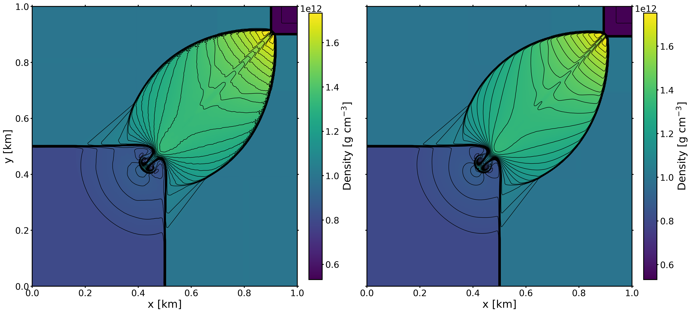

Research
“It's a dangerous business, Frodo, going out of your door. You step into the Road, and if you don't keep your feet, there is no knowing where you might be swept off to." - J. R. R. Tolkien
Constraining the Core Structure of Type IIP Core-collapse Supernovae
Observations of core-collapse supernovae (CCSNe) reveal a wealth of information about the dynamics of the supernova ejecta and composition, for example, but tell little of the progenitor star without invoking a theoretical model. Until recently, one dimensional (1D) theoretical CCSN models did not include a robust treatment of the core physics, resorting instead to artificial thermal bomb explosions. These simplified methods inputting an arbitrary explosion energy into a progenitor to induce an explosion. I use a new model for driving turbulence-aided neutrino-driven core-collapse supernovae in 1D which contains a high fidelity treatment of the neutrino physics while also accounting for turbulence and convection which can reproduce properties of 3D simulations. Moreover, our light curve features agree very well to a population of observed type IIP supernovae. With this, I can begin to connect explosion and progenitor properties for a realistic populator of CCSNe to apply to populations of observed CCSNe. This is especially exciting as LSST and other next generation surveys prepare to collect unprecedented amount of data.
The use of realistic explosion models is important for understanding observables and connecting back to the progenitor star. It is becoming clear that explosion properties inferred from light curves are not unique (e.g., Goldberg 2019) -- many progenitor and explosion energy combinations can reproduce a light curve. Using a realistic explosion model -- where the explosion energy is determined naturally by properties of the progenitor and neutrino physics -- could help to reduce this problem by excluding progenitor - explosion energy combinations that can not be acheived by more physical models.
An inital paper has been submitted where we explore this method for a suite of over 100 progenitors. We find excellent bulk agreement with observations of other Type IIP supernovae, noteable differences in estimated progenitor properties when trying to infer properties from observed light curves, and a strong, linear relationship between plateau luminosity and iron core mass.
Next Generation High-Order Simulation Codes
As we move into the era of exascale computing, we need modern supernova codes that can take full advantage of these architectures. I am a developer for the toolkit for high-orderneutrino-radiation hydrodynamics (thornado), a new supernova radiation hydrodynamics code employing high order numerical methods. We use a phase-space discretization based on the discontinuous Galerkin (DG) method.
Discontinuous Galerkin methods are a very promising method for simulating astrophysical phenomena. They can be though of as the high-order extension of finite volume methods -- evolving a high order approximation of the solution on each cell instead of cell averages -- avoiding the need for complicated reconstruction steps. As a result, the computational stencil is independent of the order of accuracy -- only nearest neighbor communication is needed, making them especially parallelizable. They naturally conserve angular momentum in smooth flows, and are generally conservative in the same sense as finite volume methods.
Most of my work has been on the hydrodynamics. It is by now well understood that hydrodynamics plays a crucial role in CCSNe. Turbulence, convection, and other hydrodynamic instabilities all play pivotal roles in driving the explosion. It is important, then, that the governing hydrodynamic equations are solved accurately and efficiently. My work has been in adapting the solvers to accomodate a tabulated nuclear matter equation of state (EoS). My undergraduate thesis focused on implementing characteristic slope limiting, as this has been shown to be more effective than limiting on the conserved variables.
An initial hydrodynamics methods paper -- complete with a nuclear EoS -- has been published, more work is in progress, so stay tuned!

Equation of State Dependence of Core-Collapse Supernova Observables
The outcomes of core-collapse supernova (CCSN) simulations can depend sensitively on the nuclear phsyics of dense matter through the equation of state (EOS). In the simulation of core-collapse supernovae, the EOS of nuclear matter is included through phenomological models and encoded in an EOS table for use in our simulations as a relationship between the thermodyanmical variables. Due to limitations in our understadning and in computational feasibility, there are many different models for the nuclear force resulting in many different tables that we may include in our simulations. Therefore, a quantitative understanding of how different EOS tables affect the outcome of core collapse is crucial to our ability to make predictions. 1D CCSN simulations are ideal tools for understanding this sensitivity, as we can run thousands of 1D simulations to truly explore the parameter space in a meaningful way. Using a new model for creating physical explosions in 1D, I explored the sensitivity of CCSNe to variations in input nuclear physics by performing a population study using nine open source EOS tables and 138 progenitor stars with ZAMS masses ranging from 9 to 120 solar masses. I tested the sensitivities of the observable signals to the nuclear equation of state and explored correlations of the signals with fundamental nuclear physics quantities, such as the symmetry energy and effective nucleon mass.
I will be continuing this work with a different set of EOS tables reflecting a wide range of key parameters with a larger set of progenitor stars, so stay tuned for updates!
Prospects for High Energy Follow-up Studies of Gravitational Wave Transients
Many of the most violent and energetic events in the cosmos, in particular the merger of compact objects and core collapse supernovae, are sources of gravitational waves and are also believed to be connected with Gamma Ray Bursts. Joint observations of electromagnetic and gravitational wave signals will provide an ideal opportunity to study the physics of these transient events and their progenitors. In particular, gamma ray observatories such as Fermi, coupled with precise sky localization, will be crucial to observe the high energy electromagnetic counterparts to gravitational wave signals. We constructed joint binary neutron star and gamma ray burst detection rate estimates using an analysis pipeline and report on the results of this analysis. Moreover, I extended the analysis to include a catalog of real galaxies appropriate for such a follow-up study (the GLADE Catalog).
Other Research
The nature of supernova shock revival: After the onset of core collapse, the shock that is responsible for tearing the star apart and driving the explosion runs out of energy and stalls. The exact nature of how the shock is revived is still a matter of active research. I developed data analysis tools to investigate the relative contributions of neutrino driven convection and the standing accretion shock instability to shock revival.
Construction of a Vacuum Suitcase: For one summer, I worked in an experimental condensed matter lab. In addition to helping run a few experiments and calibrate a new instrument, I built a portable vacuum chamber for safely moving samples between instruments.